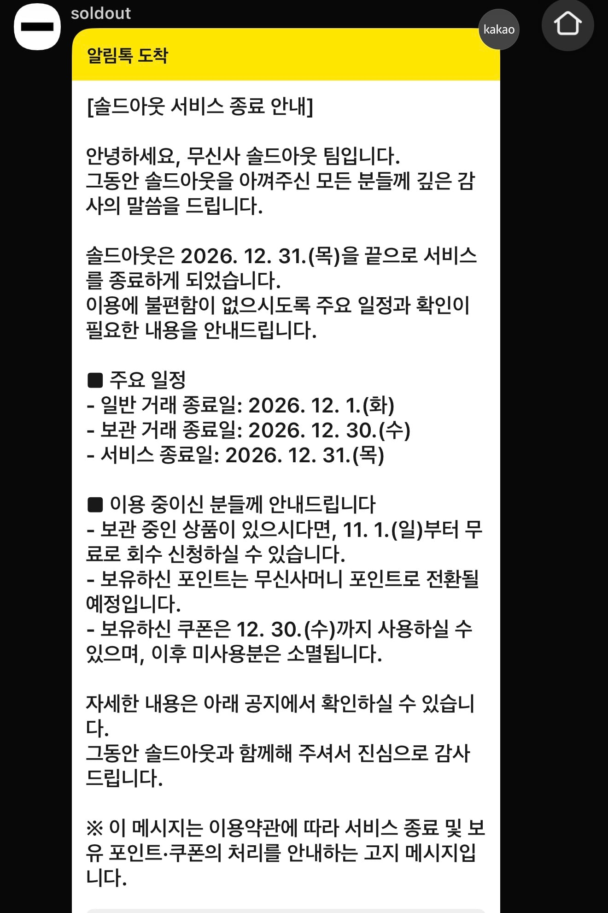

무신사가 크림이랑 번장이랑 경쟁하려고 만들었으나
후발주자다 보니 올라온 상품들 타업체에 비해 적고
무엇보다 리셀 열풍이 잦아 들면서 결국은 솔드아웃 되어버림

무신사가 크림이랑 번장이랑 경쟁하려고 만들었으나
후발주자다 보니 올라온 상품들 타업체에 비해 적고
무엇보다 리셀 열풍이 잦아 들면서 결국은 솔드아웃 되어버림
검수수수료 경쟁같은거 하긴 했는데 크림도 네이버가 뒷배라 지원이 빵빵해서....
나라면 할 수 있다
언젠가 한축이 될수도있으니 덤벼보는거지. 당장 코앞의 몇년말고 큰 비젼이있다면 해볼순있을듯 버틸수있냐 없냐 차이지
저런게 있다는걸 처음 들었음
리셀 시장이 많이 죽은것같던데
푸켓몬 카드로 살짝 반등하다가 거품 꺼지면서 죽어버림
저금리 시대때 꿀빨던것뿐..
요즘은 신발들 직구제품들 리셀사이트가 더 싸서 애용하는중 ㅋㅋ
보관비 계속 나가니깐 빨리 터는 리셀러들 많아서 좋음
크림?
개인적으로 리셀을 이용안해서 그런데 생각보다 꽤 수요가 있나보네
웃돈주고 사는건데도
예전부터 브랜드에서
재고떨이 안하고
한정판이라고 써있으면 왠만하면 품절남
브랜드에서 재고 털기좋은말이
: 한정판 ,콜라보 , 선주문 프리오더
개인매물로 구하기도 힘들면
중개업체껴서 구매많이함
닉값 ㅋㅋ
저때 리셀시장 광풍이라서 할만한 시도였다고 보긴 하는데
지금은 뭐...크림도 재미 못보고 있을듯. 리셀시장 자체가 죽어버려서. 특히 나이키같은거 한정판 시세 엄청 올랐었는데 요즘은 거래 되지도 않잖아
이럼 크림 독점체제인가
시장 자체가 좆망해서 크림에서 지랄은 못하겠다만...
성격이 다르긴한데 검수 시스템이 있는 번장이 그나마?
후르츠있음
리셀시장 최고점에서 범고래 3배까지 갈 때 진짜 어이가 없었는데
되팔이들 다 뒤져
이제 재고 털어야 되서 강제러 착해진 리셀러들 많아짐ㅋㅋㅋ
크림 냅두고 솔드아웃 써야 될 이유가 없음
아무 메리트 없는 후발주자는 대체 무슨생각으로들 만드는걸까 (빽햄저격아님)